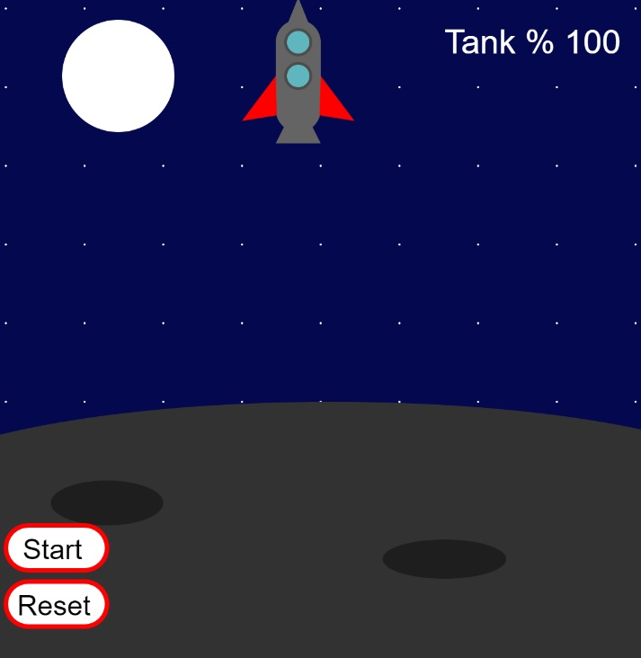
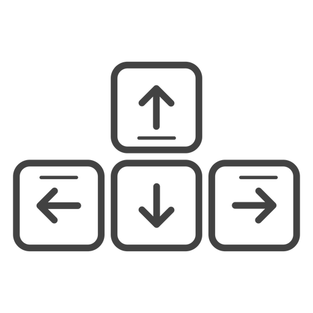

Unser erstes kleines Spiel im ersten Semester war der Lunar Lander. Erist eine kleine Anwendung, in der man eine Rakete sanft auf den Boden landen muss.

Gesteuert wird dieser mit den Pfeiltasten der Tastatur und er besitzt einen Start und Reset Knopf.
Wenn Start gedrückt wird, schwebt die Rakete zu Boden.
Der Tank leert sich mit der Betätigung der Preiltasten

Hat die Tankfüllung 0% erreicht oder setzt die Rakete zu schnell auf, hat man
das Spiel verloren.
Um das Spiel neu zu starten, betätigt man Reset und dann erneut Start.
Hier könnt ihr eine Runde Probe Spielen :B